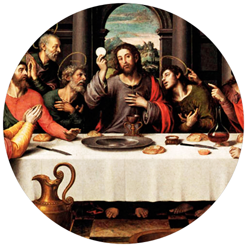

8:30pm- Jesus institutes the Most Holy Sacrament of the Eucharist

My most loving Jesus, as I receive your body, renew me with this Eucharist, draw me ever close to your Heart. Help me profess my faith in your blood through all I do.
Fruit- Transform my whole life into a Eucharist for your glory.